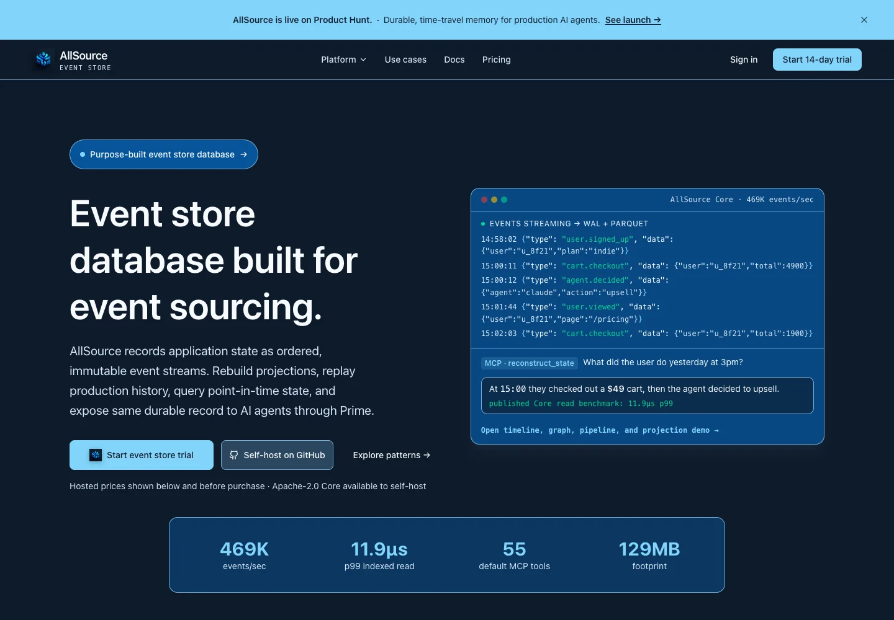
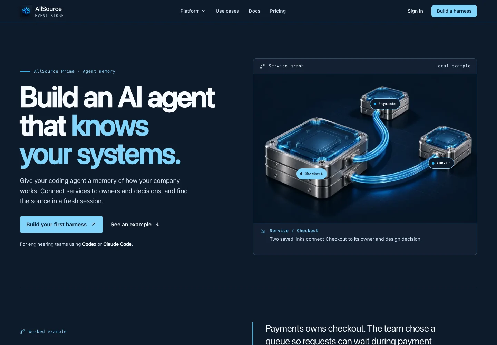
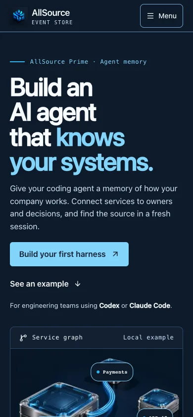

Build a harness from the first screen
A referred CTO can inspect a service owner and its decision record, then open local setup instructions for the team’s coding agent. Both paths start on the public homepage.
From database features to a question about checkout
At base commit 6e2b54a3, the hero introduced an event store database and linked to self-hosting and patterns. The revised hero (Git blob 612e0ec3) links directly to setup and a worked example. The PR body pins the reviewed commit.

Control · www.all-source.xyz · live public homepage · 1440 × 1000 · 26 November 2026, 21:02:21 UTC · clean Chrome 158.0.8127.37 target 05638A06F839E0EA29F1D1F0B0C093EF. The headline matched the base source. Deployment SHA was unavailable.
Desktop and mobile both lead with self-service
Production homepage build, local Next.js process 47923. Google Chrome 158.0.8127.37, fresh browser contexts, synthetic company data. Both images show the first viewport, captured on 26 November 2026.

Desktop · 1440 × 1000 · 21:01:01 UTC · Chrome target 6D1010D12AE3DE270418E37905A02221.

Phone · 390 × 844 · 21:01:02 UTC · Chrome target 3325D015C3D8EFFD8B3826F10532F3B6.
Follow the two referral paths
- Open the PR build at its root. Select See an example. The destination names Payments, the queue decision and ADR-17. The evidence link opens the saved graph.
- Return to the graph, focus Payments and press Enter. The owner caption appears. Activate ADR-17. The caption shows the decision and its source.
- Select Build your first harness. The page scrolls to the installation, scratch project instructions and fresh-session question. Expand the removal instructions to see a separate command for each client.
- At 320 or 390 pixels, open Menu and choose Build a harness. The menu closes, the setup heading clears the header and the page fits the viewport.
Which store holds the example?
Both prompts name allsource-example. Reuse the same scratch project for the second session and use one client at a time. A fresh empty directory cannot return the earlier service.
The example works with a keyboard and a narrow viewport
Chrome decoded the hero image and exercised both anchor destinations, graph selection and cleanup disclosure at all three widths. Component tests independently compared both public examples with the saved evidence. Browser inspection also confirmed the setup heading remained visible below the mobile header.
Customer activation remains unmeasured
The native client observations distinguish registration, direct storage reads and model-mediated answers. No referred CTO participated in this verification. The buyer test defines how to count unaided use with a team’s own data. Production deployment and newsletter submissions were outside this walkthrough.